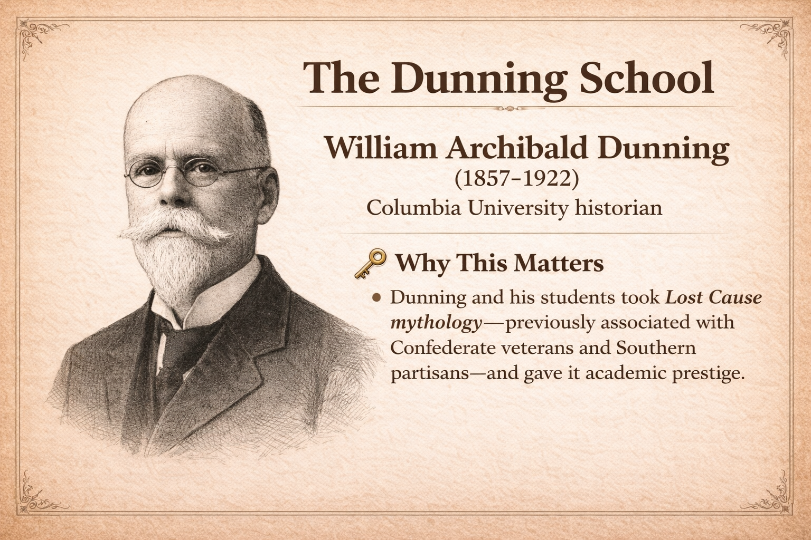
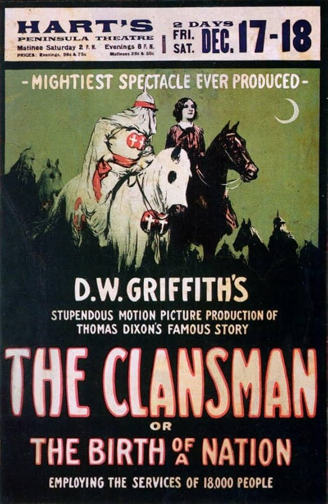
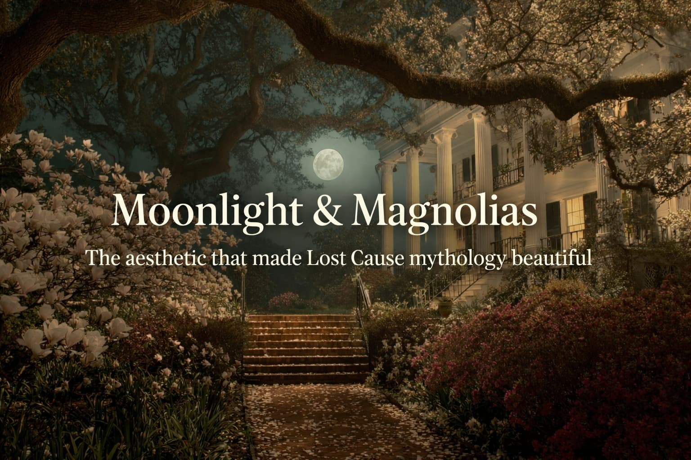
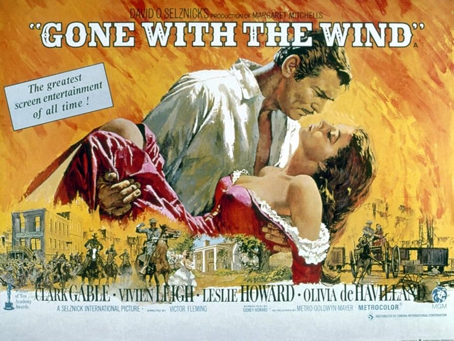

How the Lost Cause Became Mainstream American Culture (1890s-1940s)
HIST 102: U.S. History Since 1877
×
⌨️ Keyboard Shortcuts
→ / ←
Next / Previous slide
F
Fullscreen mode
S
Speaker notes view
O / Esc
Overview mode
B / .
Blackout screen
?
Show all shortcuts
Tip: Press S on a second monitor for presenter view with notes.
Recap: What We've Covered
Part 1 (Origins): Lost Cause emerged 1861-1877 as wartime coping and postwar apologetics
Part 2 (Institutionalization): 1880s-1920s built infrastructure through veterans orgs, monuments, textbooks, reconciliation
Part 3 (Today): 1890s-1940s—how Lost Cause became American culture through academia, film, and aesthetics
Part I
Academic Legitimation
How universities laundered Lost Cause mythology into scholarly consensus

Dunning School Claims
1. Reconstruction was a "Tragic Era" Northern military rule and radical policies traumatized the South
2. Black Political Participation Was Disastrous Freedpeople were "ignorant" and "incapable of self-government"
3. Carpetbaggers and Scalawags Were Corrupt Northerners exploited the South; white Southern Republicans were traitors
4. "Redemption" Was Heroic White Southerners nobly "redeemed" their states from corrupt Reconstruction governments
The Dunning School rested on one core belief:
The Assumption of "Negro Incapacity"
Black people were inherently incapable of self-government, citizenship, and political participation.
Once you accept this assumption, everything else follows:
If Black people are incapable → Reconstruction had to fail
If Black people are incapable → Black political participation was disastrous
If Black people are incapable → "Redemption" was necessary and heroic
If Black people are incapable → Jim Crow segregation is natural and protective
The entire scholarly edifice was built on white supremacist pseudoscience.
The Dunning School's Reach
Dunning's influence spread through:
PhD Students
Trained at Columbia
Hired at major universities
Taught next generation of historians
Wrote influential monographs
Textbooks
Dunning students wrote widely-used texts
Interpretations taught in schools nationwide
Shaped public understanding for generations
Academic prestige laundered Lost Cause mythology into scholarly consensus.
Part II
Visual Culture & Cinema
How film made Lost Cause mythology emotionally real

The Birth of a Nation (1915)
Director: D.W. Griffith Based on:The Clansman by Thomas Dixon
(Dunning School-influenced)
🎥 Why This Matters
The film didn’t just reflect racist Reconstruction mythology—it broadcast it at mass scale,
normalizing Dunning-style narratives and helping revive the Ku Klux Klan in popular imagination.
The Film's Devastating Impact
White House screening: President Woodrow Wilson reportedly said, "It is like writing history with lightning"
KKK revival: Directly inspired the Second Ku Klux Klan (1915-1940s)
Commercial success: Highest-grossing film until Gone with the Wind (1939)
Cultural reach: Seen by millions; shaped national perceptions of Reconstruction
Cinema's visual power made Lost Cause mythology emotionally real in ways scholarship alone never could.
×
Woodrow Wilson and Birth of a Nation
Context: Woodrow Wilson was a Princeton professor before becoming president, and his scholarship reflected Dunning School assumptions about Reconstruction.
The Quote: Wilson allegedly said the film was "like writing history with lightning" and "my only regret is that it is all so terribly true."
Historical Note: The exact wording is disputed, but Wilson definitely screened the film at the White House in 1915, giving it enormous prestige.
Presidential endorsement transformed a film into historical validation.
×
The Second Ku Klux Klan (1915-1940s)
Founded: November 1915, Stone Mountain, Georgia Inspired by:The Birth of a Nation
Differences from First KKK:
Geography: National movement, not just Southern (strong in Midwest, West)
Targets: Black Americans, Catholics, Jews, immigrants, "moral vice"
Scale: 2-5 million members by mid-1920s
Style: Public parades, political organizing, mass rallies (not just night terror)
The film's heroic portrayal of the KKK directly sparked a mass white supremacist movement.

What Is "Moonlight & Magnolias"?
An aesthetic strategy—a cultural style that romanticizes the antebellum South.
Emotional: Nostalgia, longing, elegiac beauty, lost world
Narrative: Tragic destruction of a superior civilization
What's absent? Slavery, violence, exploitation, human suffering.
Gone with the Wind (1939)

Novel: Margaret Mitchell (1936) Film: Directed by Victor Fleming (1939)
Why It Matters
The apex of the Moonlight & Magnolias myth in popular culture
Turns the antebellum plantation world into a tragic romance
Frames slavery and secession as background scenery rather than central violence
Normalizes Lost Cause themes as national nostalgia
The apex of Moonlight & Magnolias—and the most successful film in American history (inflation-adjusted).
How Gone with the Wind Works
1. Visual Splendor Tara is gorgeous—white columns, sweeping staircases, golden sunsets. You want to be there.
2. Sympathetic Characters Scarlett is strong, resourceful, compelling. You identify with her struggle to save Tara.
3. Emotional Substitution You mourn Tara, not slavery. The loss you feel is aesthetic/nostalgic, not moral.
4. Enslaved People as Scenery Mammy and Prissy are loyal servants, not people with their own desires. Slavery is backdrop, not subject.
"Memory Laundering"
memory laundering(n.) The process of taking something morally indefensible and making it aesthetically appealing, emotionally satisfying, and culturally prestigious.
Moonlight & Magnolias "launders" the memory of slavery by:
1. Extracting slavery from the aesthetic Show the beauty, hide the violence
2. Substituting longing for justification Don't defend slavery; just make people miss "that world"
3. Marketing the aesthetic Weddings at plantations, tours of "gracious estates," "Southern charm"
4. Making it pleasurable Enjoying the aesthetic doesn't feel racist; it feels sophisticated
Lost Cause as Political Technology and Soft Power
political technology(n.) A system of ideas, arguments, and institutions designed to achieve and maintain political power.
soft power(n.) The ability to shape preferences through appeal and attraction rather than coercion or force.
Lost Cause (Political Technology)
Function: Justification
Method: Arguments, claims, evidence
Goal: Legitimize Confederacy, enable Jim Crow
Tone: Defensive, assertive
Moonlight & Magnolias (Soft Power)
Function: Aestheticization
Method: Beauty, nostalgia, longing
Goal: Make Lost Cause emotionally livable
Tone: Elegiac, romantic
Together, they make white supremacy defensible (Lost Cause) andbeautiful (Moonlight & Magnolias).
Connecting to Jim Crow
All of this cultural production—Dunning School, Birth of a Nation, Gone with the Wind—served to
legitimize Jim Crow segregation.
How Lost Cause Enabled Jim Crow
Delegitimized Black political participation: "Reconstruction proved they can't govern"
Justified segregation as natural: "Separate societies are just the Southern way"
Excused violence as defensive: "Redemption" narratives made white terror seem heroic
Blocked federal intervention: National Lost Cause acceptance meant Northern acquiescence
Why Understanding This Matters
When you hear arguments that:
The Civil War wasn't really about slavery
Confederate monuments are just about heritage
Reconstruction was a disaster
Enslaved people were treated well
You're not hearing neutral historical claims.
You're hearing Lost Cause mythology which reframes slavery, the Confederacy, and Reconstruction in ways that excuse racial hierarchy.
A Final Thought
"The past is never dead. It's not even past."
— William Faulkner, Requiem for a Nun (1951)
The Lost Cause is not ancient history.
It shapes debates happening right now.
Now that you understand where it came from and how it works, you're better equipped to think critically about the stories we tell ourselves about who we are as a nation.